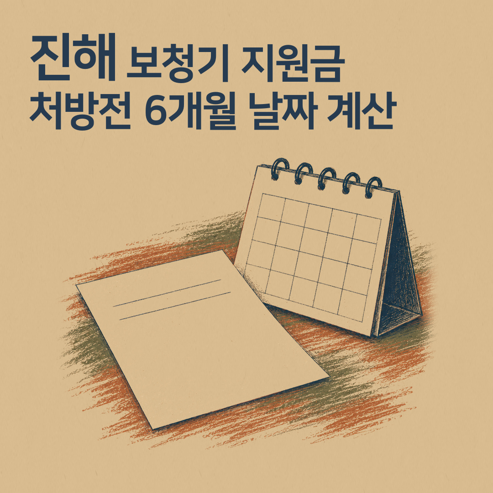
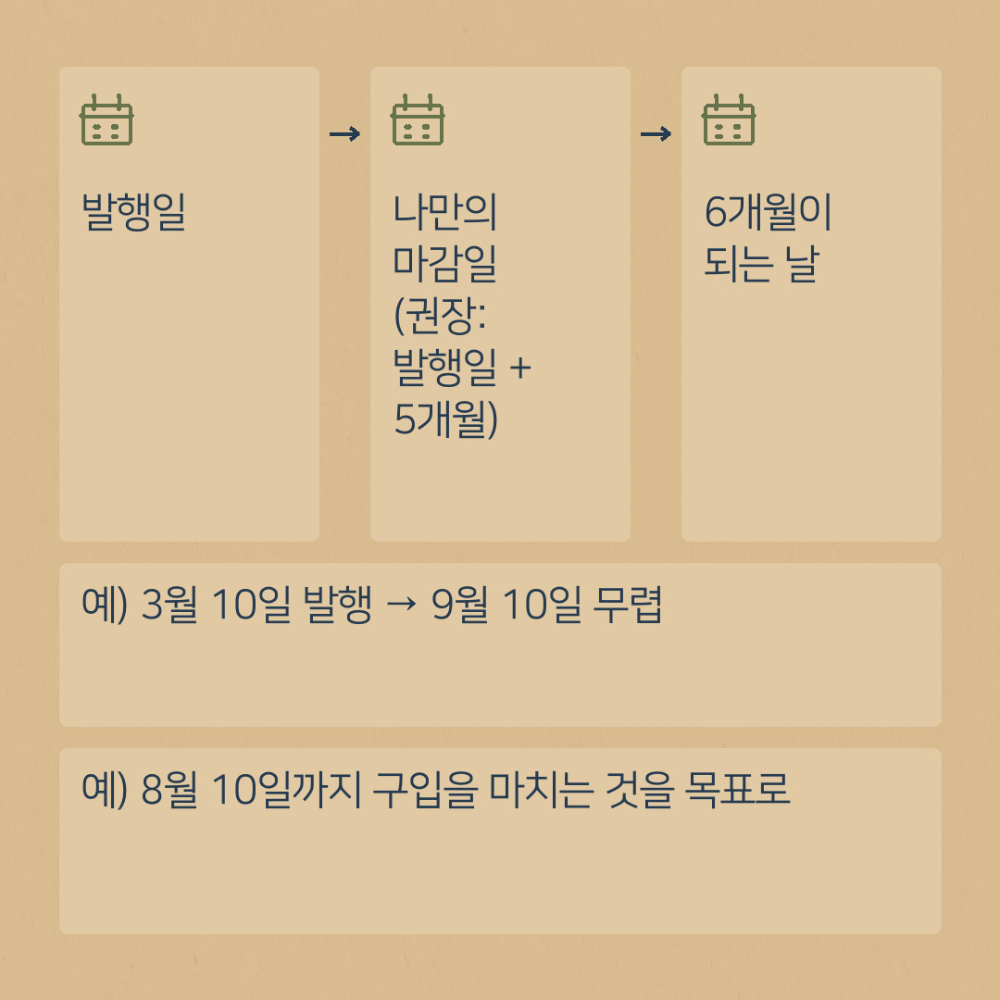
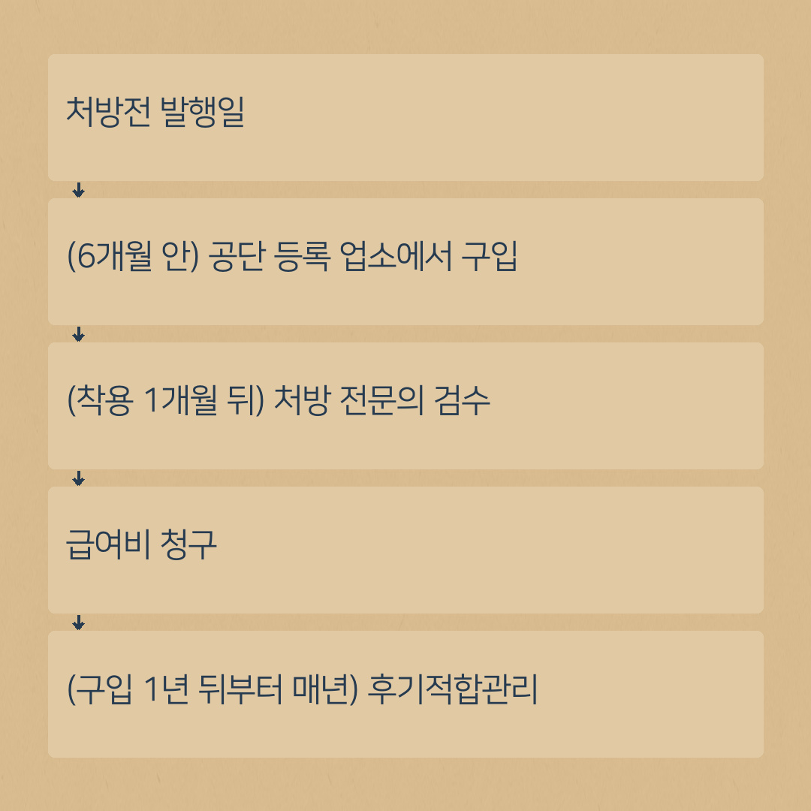

보청기 처방전 6개월 기한, 날짜 계산법과 한 달 여유를 두는 이유
- 공단 기준: 처방전 발행일로부터 6개월 이내 구입한 보조기기만 급여가 됩니다.
- 기준일은 처방전에 적힌 "발행일"입니다. 병원 방문일이나 매장 첫 상담일이 아닙니다.
- 권장: 발행일 + 5개월을 나만의 마감일로 잡아 한 달 여유를 두세요.
- 구입 뒤: 착용 1개월 뒤 검수 → 급여비 청구 → 구입 1년이 지난 때부터 매년 후기적합관리. 내구연한은 5년.

보청기 지원금 상담을 하다 보면 서류보다 더 자주 문제가 되는 것이 있습니다. 바로 날짜입니다.
처방전을 받아 두고 바쁜 일이 겹치다 보면 몇 달이 금방 지나갑니다. 그런데 건강보험 보청기 급여에는 꼭 지켜야 하는 날짜가 정해져 있습니다. 그 날짜를 달력에 어떻게 적어 두면 좋은지 정리했습니다.
공단 기준은 "처방전 발행일로부터 6개월 이내"
국민건강보험공단의 보청기 급여비 청구 안내에는 이렇게 적혀 있습니다.
"처방전 발행일로부터 6개월 이내 구입한 보조기기만 급여 가능합니다."
기준이 되는 날은 처방전을 발행한 날입니다. 병원에 다녀온 날짜나 매장에 처음 상담 온 날짜가 아닙니다. 처방전 종이에 적힌 발행일을 확인해 주세요.
날짜 계산, 이렇게 해 보세요
처방전을 받은 날 달력에 세 가지를 적어 두시면 편합니다.
- 발행일 — 처방전에 적힌 날짜를 그대로 적습니다.
- 6개월이 되는 날 — 발행일에서 여섯 달 뒤 날짜를 표시합니다. 예) 발행일이 3월 10일이면 → 9월 10일 무렵
- 나만의 마감일 (권장: 발행일 + 5개월) — 여유를 두고 한 달 앞당겨 표시해 두세요. 예) 3월 10일 발행 → 8월 10일까지 구입을 마치는 것을 목표로
정확한 마지막 날(당일을 포함하는지 등)은 해석이 헷갈릴 수 있습니다. 마지막 날에 딱 맞추기보다 여유를 두시고, 애매하면 국민건강보험공단(1577-1000)에 확인하시는 것이 가장 안전합니다.

왜 한 달 여유를 두라고 할까요
상담을 해 보면 생각보다 시간이 걸리는 일이 있습니다.
- 청력과 생활 환경을 확인하고 형태를 고르는 상담
- 귓속형처럼 귀 모양을 떠서 만드는 경우, 제작 기간
- 처음 착용 후 소리를 맞추는 조절
- 가족과 상의할 시간
그래서 귀인보청기는 예약 전화를 받을 때 처방전 발행일을 꼭 여쭤봅니다. 기간이 얼마 남지 않았으면 상담 순서를 먼저 정해 드립니다.
구입한 뒤에도 날짜가 이어집니다
- 착용 1개월 뒤: 처방한 전문의에게 음장검사로 검수확인을 받습니다. 검수 결과에 따라 급여 여부가 정해집니다.
- 구입 1년이 지난 때부터 매년: 1회 이상 후기적합관리를 받으면 급여비가 지급될 수 있습니다.
- 내구연한 5년: 공단 기준표의 보청기 내구연한은 5년입니다. 같은 품목을 다시 지원받기까지의 기준 기간입니다. 내 경우 적용은 공단에 확인하세요.
한 장에 모아 보면 이렇습니다.
- 처방전 발행일
- (6개월 안) 공단 등록 업소에서 구입
- (착용 1개월 뒤) 처방 전문의 검수
- 급여비 청구
- (구입 1년이 지난 때부터 매년) 후기적합관리

날짜 메모 칸 (인쇄해서 채워 보세요)
- 처방전 발행일: ____년 __월 __일
- 6개월 되는 날: ____년 __월 __일
- 나의 구입 목표일(발행일 + 5개월): ____년 __월 __일
- 착용 시작일: ____년 __월 __일
- 검수 받을 날(착용 1개월 뒤 이후): ____년 __월 __일
- 첫 후기적합관리(구입 1년이 지난 때부터): ____년 __월 __일
자주 받는 질문
Q. 6개월이 지나 버리면 어떻게 하나요?
A. 공단 기준상 처방전 발행일로부터 6개월 안에 구입한 보청기만 급여가 됩니다. 이미 지났다면 어떻게 해야 하는지 국민건강보험공단(1577-1000)이나 처방받은 병원에 먼저 확인해 보세요.
Q. 처방전을 잃어버렸어요.
A. 급여비 청구 서류에 처방전이 들어갑니다. 처방받은 병원에 재발급이 가능한지 먼저 문의해 보세요.
날짜가 헷갈리시면 처방전을 가지고 진해센터(자은동 하이존빌딩) 또는 명지서비스센터로 예약 후 오세요. 남은 기간부터 같이 확인해 드립니다. 전체 순서는 보청기 지원금 받는 순서 5단계에 있습니다.
제도는 바뀔 수 있습니다. 신청 전에 국민건강보험공단 홈페이지나 1577-1000에서 한 번 더 확인해 주세요.
상담 예약
전화 010-6599-0109 또는 0507-1426-0116 (두 센터 공통)
진해센터 경남 창원시 진해구 진해대로 999, 하이존빌딩 1층 108호(자은동) · 하이존 상가 지하주차장
명지서비스센터 부산 강서구 명지국제6로 99, A동 1070호 · 대방디엠시티 상가주차장
운영시간: 평일 08:30–18:30, 토요일 08:30–13:00, 일요일 휴무 · 예약 후 방문해 주세요. 오시는 길 보기
네이버 블로그에서도 보기: 귀인보청기 블로그 · English version